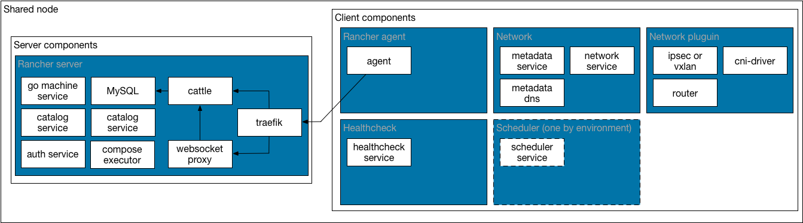

Rancher Proof of Concept/Home Lab/Hello World Environments

Run server and agent on a single node to running 5-10 agent nodes. A 4GB multi core VM/server should be used for the Rancher server agent combo node. Other nodes can be tailored to your needs. If you plan to use a single server and more then 1 or 2 environments with a few hosts each, it would be best to create an external Database. This can be an RDS instance or another VM that runs MySQL. Alternatively, you could use more memory and give the MySQL directory its own block device/volume. The disk supporting MySQL should be as fast as possible. In this type of environment, you would want your Rancher server to have a minimum: 1GB of Ram 1xCPU core
If you are running an agent on the server it is recommended to use at least to account for additional workload added by user containers. 2GB of Ram 2xCPU cores